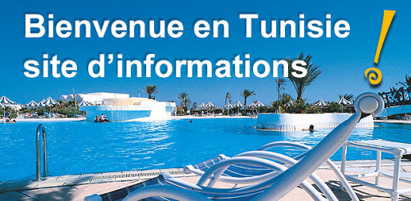

La tunisie :
Pour bien choisir sa destination de vacances, il faut savoir comprendre la description d'une ville, d'un village, d'une région.
Pour bien choisir sa destination de vacances, il faut savoir comprendre la description d'une ville, d'un village, d'une région.
faire un choix. Choisir un continent, une liste de pays qui nous attirent ou qui sont adaptés au type de voyage ou d’activités que nous désirons faire.
Comment choisir sa destination
vous partage ici quelques facteurs à considérer, afin d’être en mesure de choisir une destination adaptée à vos besoins...
Savoir ce qui nous intéresse sur le moment est un bon point de départ.
vous partage ici quelques facteurs à considérer, afin d’être en mesure de choisir une destination adaptée à vos besoins...